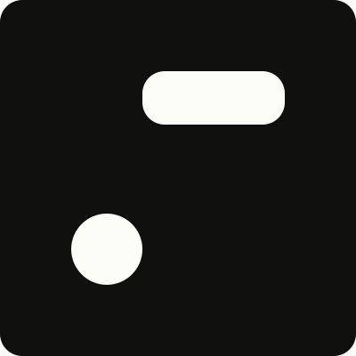

Morse Code Translator
A web application that translates text to Morse code and vice versa, offering a digital rendition of a historic communication method.
← Back to HomeA web application that translates text to Morse code and vice versa, offering a digital rendition of a historic communication method.
← Back to Home